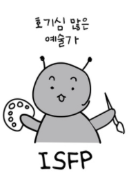

이승훈의 자기소개 페이지 입니다.
'''
복습하기 싫어요ㅎㅎ
복습을 주 목적으로 작성을 해서 자기소개 내용은 부족할지도 모르지만 시작해보겠습니다.
간략한 소개 표
취미
좋아하는 것
기타
1
게임
롤
골드
2
음악감상
RAP
HUh!
3
주식
상한가
저가매수
ISFP 형의 특징
NFP와 마찬가지로 자기중심성(自己中心性)의 양면성이 있다. 기본적으로 감정형(F) 특성상 판단에 있어 '인간의 정서', '인간 중심의 가치' 등을 지향하기에 타인 배려 성향도 다분하다. 말없이 다정하고 온화하며 사람들에게 친절하고 상대방을 잘 알게 될 때까지 내면의 모습이 잘 보이지 않는다. 의견 충돌을 피하고, 인화를 중시한다. 인간과 관계되는 일을 할 때 자신의 감정과 타인의 감정에 지나치게 민감한 경향이 있다. 이들은 결정력과 추진력을 기를 필요가 있을 것이다. 3차 기능인 Ni(내향 직관)으로 눈치가 빠르며, 조용히 자기 일만 하고 있는 것처럼 보이지만 사실 주변 상황파악도 다 하고 있다. 경험을 통해서 부기능 Se(외향 감각)과 함께 주기능 Fi(내향 감정)인 자신의 내면을 보호하는데에 잘 사용할 수 있다. 사람 간의 화합을 중요하게 생각하며 의견 충돌을 회피하는 성향으로 인해 타인과의 갈등이 심화되었을 경우 문제를 해결하려고 하기보다 상대방과의 관계를 끊을 수 있다. 이는 인간관계에서 큰 스트레스를 받는 ISFP의 특성 중 하나이다. 문학, 음악, 미술 분야에 관심이 많아 예술가 기질도 있으며, 사회봉사 직종에도 잘 어울리는 유형이다. 따라서 평범한 회사 사무직이나 사회봉사직에도 적지 않게 분포하는 종류의 성격 타입이다.
